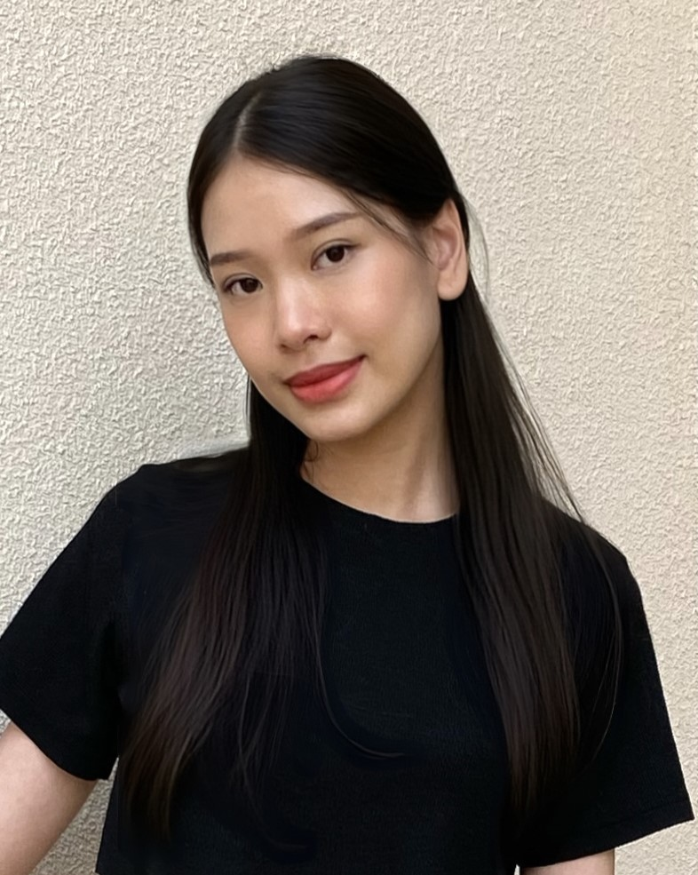

Buachompoo Buaphuech

Summary
I have an interpersonal skill, execellent problem solving skills,
willing to take responsibility to acheive team goals
and able to perform assigned tasks as well.
Education
Work Experience
-
Customer Service at Transcosmos (Thailand) Co., Ltd - Bangkok, Thailiand
Jun2022 - Jun 2023
- Communicated with clients through Social Media channels, Messages, Emails, and Phone calls,
and respond to them promptly.
- Assisted clients with issuing tickets, making flight changes, handling special requests, and
processing refunds, including complaints.
- Coordinated with other teams and the airlines to solve clients' problems.
-
Internship in In-Flight Service Department at Thai Smile Airways Co., Ltd - Bangkok, Thailand
Jul 2021 - Oct 2021
- Managed inventory of goods to serve on the aircraft.
- Prepared a variety of reports and documents using the SAP program to update inventory daily.
- Used critical thinking to analyze problems and make decisions.
Skills
Hard Skills
Excellent spoken and written English, TOEIC score of 670
Soft Skills
Fast Learner, Communication, Problem Solving, Team player, Adaptable, Decision
making
Other